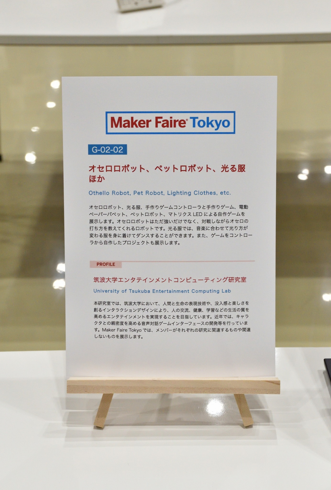
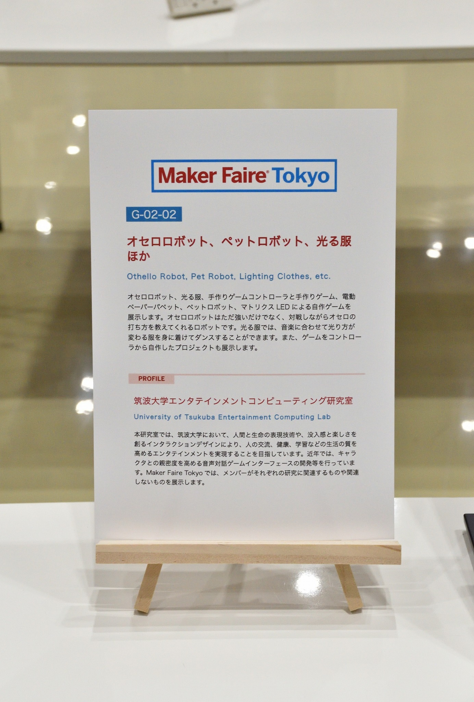

Maker Faire Tokyo 2025
オセロロボット、ペットロボット、光る服ほか (2025)
筑波大学エンタテインメントコンピューティング研究室として出展しました。私の出展物はオセロ教授ロボット "Minoth" です。

 
詳細
公式ページ: Maker Faire Tokyo 2025
日時: 2025/10/4（土）12:00～18:00、2025/10/5（日）10:00〜17:00
会場: 東京ビッグサイト 西4ホール (東京都江東区有明3-11-1)
入場料: ［前売］大人 1,400円 / 18歳以下 500円、［当日］大人 1,800円 / 18歳以下 700円
出展者ページ